Física Básica
Mecânica - Dinâmica - Texto 02
1. Força Peso
A força peso é uma força gravitacional que atua sobre corpos próximos à superfície da Terra e aponta sempre para o centro da Terra.
Esta força está relacionada com o campo gravitacional (g) da Terra, que é definido como a a força gravitacional aplicada sobre cada 1 kg de massa.
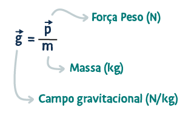Consequentemente, podemos calcular o peso de um corpo como sendo o produto entre a massa de do corpo e o campo gravitacional local.
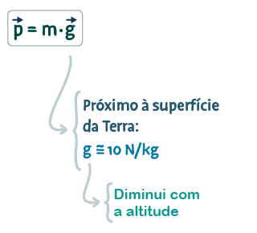O valor de "g" varia com altitude e até mesmo com as características geológicas de uma localidade. Como simplificação didática, vamos adotar que este valor é de 10 N/kg (valor aproximado).
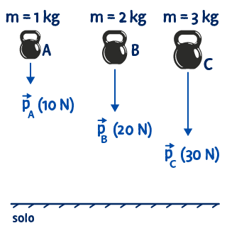Peso de um corpo na Terra e na Lua
Vamos ilustrar duas situações, calculando o peso de um astronauta de massa 80 kg na Terra, onde g = 10 N/kg e na Lua, onde g = 1,6 N/kg.
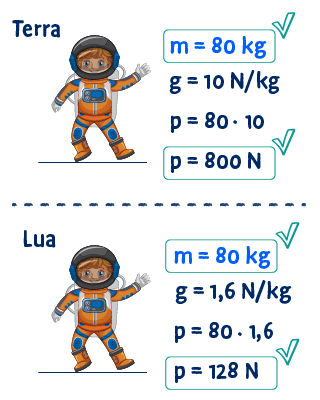Exemplo
Uma pessoa segura um corpo de massa 50 kg, conforme ilustrado. Sabendo que o corpo está em repouso, calcule a força que a pessoa está fazendo.
• Importante: vamos utilizar a notação vetorial na resolução de todos os nossos exemplos e exercícios.
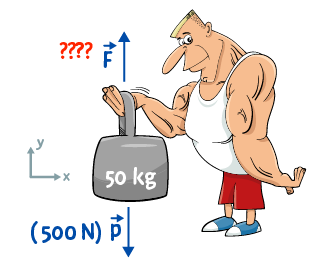Sabemos que a força resultante é a soma de todas as forças que atuam sobre o corpo. Vamos escrever esta expressão em notação vetorial e calcular a força que a pessoa aplica no corpo.
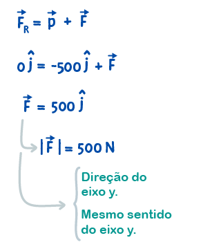2. Força Normal
A figura mostra um corpo em repouso apoiado sobre uma mesma.
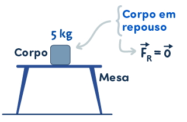Neste caso, a força resultante sobre o corpo é nula e duas forças atuam sobre o corpo: a força peso, com direção vertical e sentido para baixo e a força aplicada pela mesa sobre o corpo, chamada de força normal (pois é sempre perpendicular ao plano da superfície de contato).
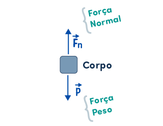Exemplo:
Um corpo de massa 5 kg está em repouso sobre a superfície horizontal de uma mesa. Uma pessoa aplica uma força de 30 N sobre o corpo.
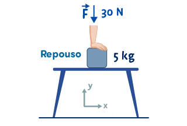Calcule a força normal aplicada pela mesa sobre o corpo.
O primeiro passo é desenhar o diagrama de forças, que consiste em desenhar o corpo e as forças que atuam sobre ele.
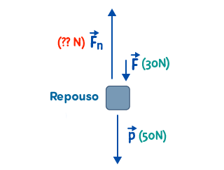Em seguida, a partir do sistema de coordenadas adotado, escrevemos a expressão vetorial para o cálculo da força resultante, encontrando assim a força normal.
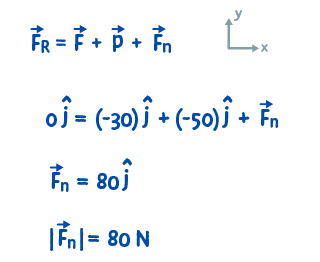A força normal tem a direção e sentido do eixo "y" e módulo de 80 N.
3. Força de Tração
A força de tração é aplicada sobre um corpo por meio de um cabo, uma corda ou outro elemento que esteja sendo tracionado (puxado entre suas extremidades, sendo "esticado").
No exemplo abaixo, o corpo é sustentado por dois fios.
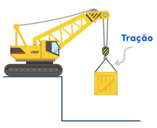Ao fazer o digrama de forças sobre o corpo desenhando as forças de atração (aplicadas por cada fio) na mesma direção dos fios.
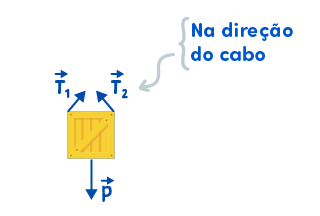Para calcular a força resultante podemos primeiro somar as forças de tração "T1" e "T2" e em seguida somar este resultado com a força peso.
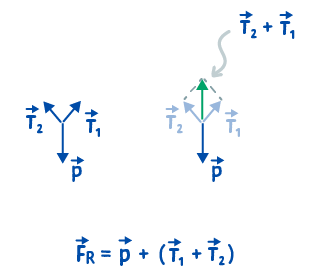Supondo que o corpo esteja em equilíbrio, a soma destas três forças é 0 N.
4. Força de Atrito
A força de atrito é uma força de interação entre duas superfícies em contato, devido às irregularidades existentes entre estas superfícies.
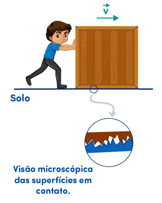A força de atrito entre duas superfícies em contato pode ocorrer de duas forças, apresentadas a seguir.
a) Força de atrito cinético: quando ocorre movimento relativo entre as duas superfícies. Esta força tem sentido contrário ao movimento relativo entre as superfícies.
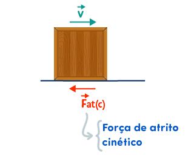b) Força de atrito estático: quando ocorre apenas uma tendência de movimento relativo entre as duas superfícies. Esta força tem sentido contrário a esta tendência de movimento relativo.
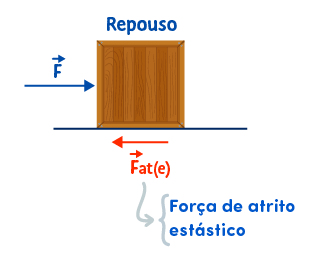Observe que, se o corpo está em repouso ou em MRU, a força resultante é nula e o módulo da força de atrito será igual ao módulo da força
Créditos
Prof. Geraldo Felipe / IFRN-CNAT (2023)
Utilizamos:
• Freepik Premium
• Ilustrator
• MovAvi